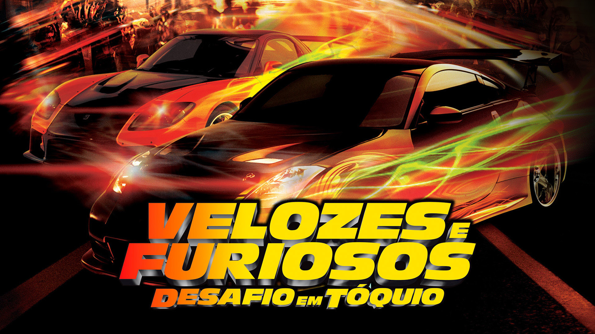
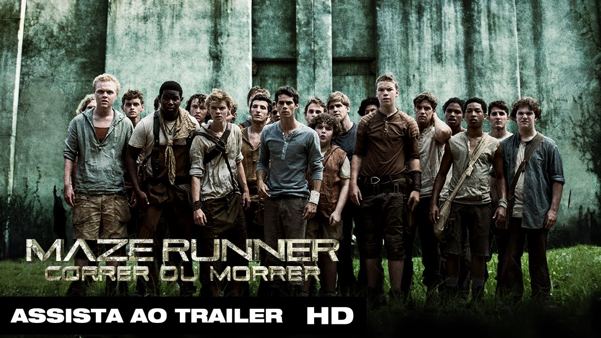
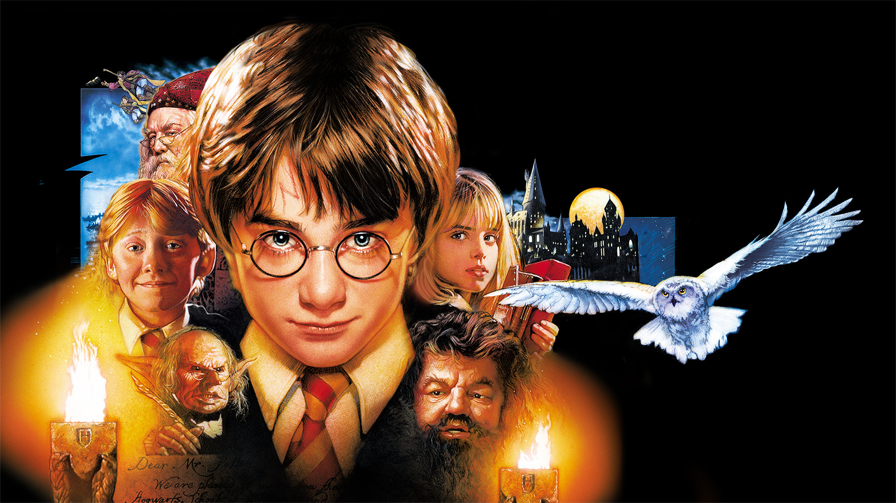

Velozes & Furiosos: Desafio em Tóquio:
Velozes & Furiosos: Desafio em Tóquio é um dos meus filmes favoritos porque ele mostra um estilo de corrida diferente dos outros filmes da franquia, focando principalmente no drift.
Veja mais clicando no nome do filme, na parte superior da tela.

Maze Runner: Correr ou Morrer:
Maze Runner: Correr ou Morrer é um dos meus filmes favoritos porque ele traz muito mistério e suspense desde o começo. A história começa com o personagem principal acordando em um lugar estranho sem lembrar de nada.
Veja mais clicando no nome do filme, na parte superior da tela.

Harry Potter e a Pedra Filosofal:
Harry Potter e a Pedra Filosofal é um dos meus filmes favoritos porque apresenta todo o universo mágico de Hogwarts e do mundo dos bruxos. O filme mostra o começo da jornada de Harry Potter, desde quando ele descobre que é um bruxo até entrar na escola de magia.